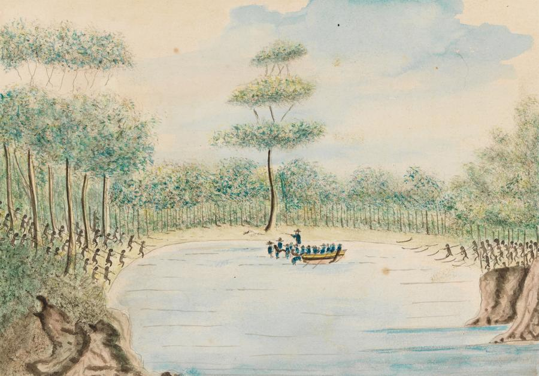

Govenor Arthur Philips kidnapped Bennelong in 1789 and he was inprisoned in Sydney Cove with another indigenous man named Colebee.
Bennelong eventually learned english and became a negotiator. He escaped through some woods with his leg iron and finally made it out in 1790 after six months.